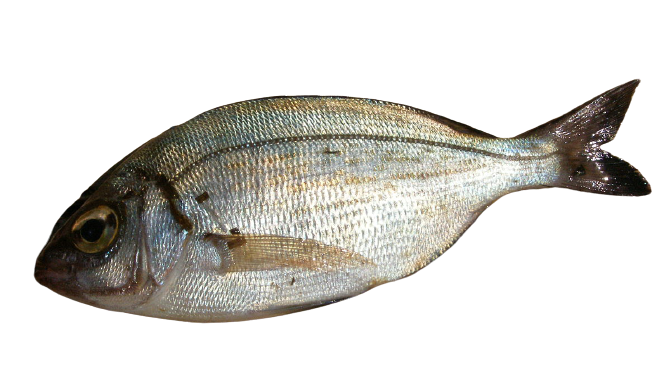

dorade

poisson marin de Méditerranée et d’Atlantique, au corps ovale comprimé latéralement et au ventre et dos bombés, de couleur gris argent.


poisson marin de Méditerranée et d’Atlantique, au corps ovale comprimé latéralement et au ventre et dos bombés, de couleur gris argent.
Grand poisson comestible des mers tempérées, de couleur gris-bleu foncé, dépourvu d'écailles et de nageoires ventrales.
La saupe (Sarpa salpa) est une espèce de poissons appartenant à la famille des Sparidae, commune en Méditerranée. C'est la seule espèce du genre Sarpa (monotypique).
La murène commune (Muraena helena) est une espèce de poissons de la famille des Muraenidae.
Le mulet et la mule sont des hybrides statistiquement stériles de la famille des équidés, engendrés par un âne (Equus asinus) et une jument (Equus caballus).
Pieuvre(f) et poulpe(m) sont des noms vernaculaires ambigus désignant en français certains céphalopodes benthiques du sous-ordre Incirrina (principalement la famille des octopodidés, de l'ordre Octopoda).
Le marbré (Lithognathus mormyrus) est une espèce de poissons marins de la famille des Sparidés.
Sole [sɔl] est un nom vernaculaire générique qui désigne en français un grand nombre d'espèces de poissons, en général plats, vivant couchés sur des fonds sableux peu profonds, généralement bruns d'un côté, blanc crème de l'autre sauf exception.
Le sar à tête noire (Diplodus vulgaris) est une espèce de la famille des sparidés. Il est également appelé veirade.
Rouget est un nom vernaculaire ambigu donné en français à plusieurs espèces de poissons osseux le plus souvent méditerranéens, mais aussi d'Afrique et d'Asie.
Le barracuda (Sphyraena barracuda) est une espèce de poissons carnivores de grande taille, de la famille des Sphyraenidae.
Labrus merula, le Merle ou Labre merle, est une espèce de poissons de la famille des Labridae qui se rencontre en Méditerranée et dans les eaux Atlantique attenantes.